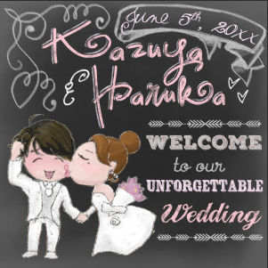
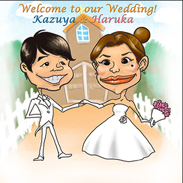
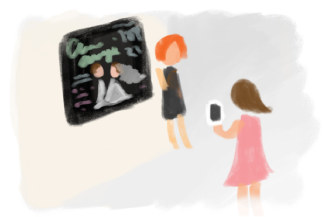
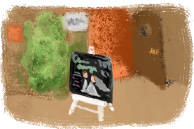

日本人の多くの方が結婚式の時にウェディングボードを用意すると思います。
それは、時間を割いて結婚式に来てくれた方々への
「良く来てくれたね、どうもありがとう」 という感謝の気持ち。
そして、
「私達の結婚式をゆっくり楽しんでね、これからも２人をよろしくね」
という精一杯のもてなし。
KOKUBAN Weddingでは、そんな気持ちを出来る限り形にして
かつ素敵な結婚式の雰囲気を壊してしまわないような
marginお二人にピッタリのウェディングボードを心を込めて製作しています。


左はKOKUBAN Weddingで作っているスタイルです。
チョークボードのスタイルは海外の結婚式で
招待状や座席表、デコレーションにも多く使われています。
今、日本の多くのウェディングボードで広く浸透しているスタイルは
右のカリカチュアと呼ばれる、特徴を最大限に誇張した似顔絵です。
そのほとんどが紙に直接描かれているのでサイズが小さく、
受付テーブルの上などで気づいてもらえないことも多いです。
せっかく飾ったのに見てもらえないのでは残念。
せっかく飾るなら入り口で大きく皆さんをお出迎えしたい。
お二人顔の特徴を誇張するより、もっと雰囲気のある、動きのある絵で
お2人らしくゲストのみなさんをお迎えしたい。
KOKUBAN Wedding はそれをかなえるウェルカムボードです。
この黒板の中でなら、どんなお２人でも表現できます

結婚式の思い出に写真を撮っていかれる方も多く、場を楽しませてくれます。
小さなレストランの会場に到着したお客様が入り口で不安になることもありません。
シックな色使いが場の雰囲気を壊さず、
洋式の結婚式やレストランでの結婚パーティーにお洒落な演出をしてくれます。

KOKUBAN Weddingではお客さまは神様ではありません。
お客さまと私たち、どちらが高いわけでもなく
言わば友達の様に同じ目線の高さにいると思っています。
私たちのウェルカムボードは大事な結婚式にお呼ばれしたお二人の友達で
ゲストの皆さまをお迎えするお手伝いをする役目を貰っています。
同じ目線だからこそ、もっと親身にもっと丁寧にお二人の幸せを祝福したいと考えています。
新郎さま新婦さまのつながり
お２人とゲストの方々とのつながり
人と人とのつながりを大切にしたい
心のこもったウェディングボードを提案しています。